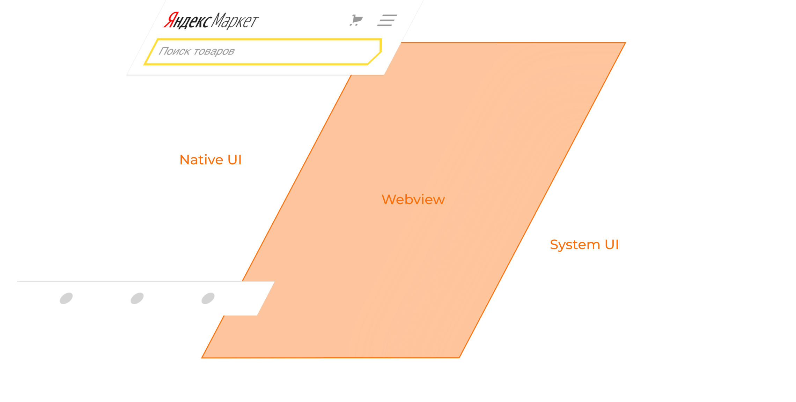
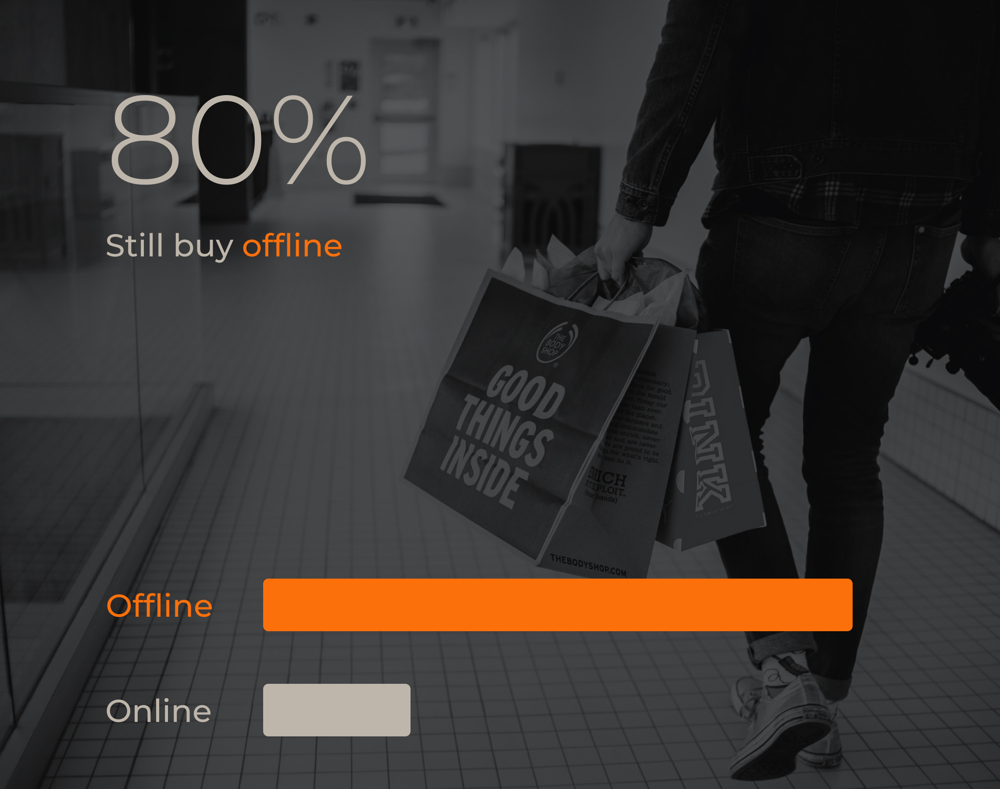

Platform
iOS, Android, Huavei
Role
Product Designer
Date
2019
Yandex.Market is one of the products in the Yandex services ecosystem.
Yandex.Market app is a local price comparison service for selecting and purchasing products. Users can find detailed descriptions of each product's characteristics and compare models and sellers by customers reviews.
The company decided to transfer the first version of its mobile application to the cross-platform solution, because the cost of its development was not paying off. It means the content inside was updated in the background only after the web version of the service had been updated. As a result the app lost its interaction speed and most users left it. The support for the project ended.
So I became a part of a three person discovery team. We had an ambitious task to increase the audience of the mobile app x3 times.
All our possible solutions were smashed against the technological barrier that we had created by ourselves. Everything indicated that it was necessary to change the direction of app development and change the technological core of the current platform. But we didn't have the resources for such a huge step.
This led to finding a way to confirm that native app development might help reach the goals. But proving the payback wasn't enough to get a development team. It is necessary to justify the potential growth due to long-term investment in this team.
App Store & Google Play
>4
DAU
3x
As a result of qualitative research, it turned out that there was a huge part of the market that we still didn't cover with our services.
Quantitative research has confirmed that more than 80% of purchases in Russia are still offline. People prefer to go to stores near their homes or to shop in malls after work, rather than wait for a courier with parcels. Based on this data, we have conducted interviews with more than 30 respondents and compiled a decent list of JTBD's that gave a starting point.
So we generated a few hypotheses that were aimed at connecting offline buyers to our service. And every single day, we gathered in the malls to conduct screening interviews with its visitors and test hypotheses on prototypes.
Now, with the help of native mobile platform technologies, the app allows customers to take photos of products in the malls, compare them and find the best offer. This model has erased the line between online and offline shopping. Now people can start choosing items at the mall, and continue at homes on their couches.
As a result of this work, we approved one of the main directions of the app and received permission to open a vacancy for the position of a developer.
It was probably the smallest but the most noticeable branch in the development of the app.
Now our team has almost 40 people. And the development of the mobile app is the main focus of the company.
Since mobile app was launched, the app's audience has grown almost 10 times, and the rating in stores at both stores has risen from 2.8 to 4.7.